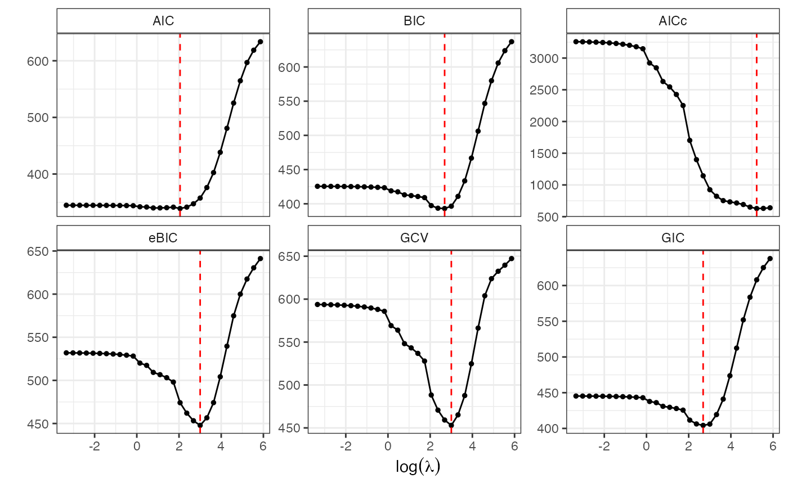

Induced Smoothed Lasso Regularization Path
islasso.path.RdFits a sequence of penalized regression models using the Induced Smoothing Lasso approach over a grid of lambda values. Supports elastic-net penalties and generalized linear models: Gaussian, Binomial, Poisson, and Gamma.
Usage
islasso.path(
formula,
family = gaussian(),
lambda = NULL,
nlambda = 100,
lambda.min.ratio = ifelse(nobs < nvars, 0.01, 1e-04),
alpha = 1,
data,
weights,
subset,
offset,
contrasts = NULL,
unpenalized,
control = is.control()
)Arguments
- formula
Model formula of type
response ~ predictors.- family
Response distribution. Supported families:
gaussian(),binomial(),poisson(),Gamma().- lambda
Optional numeric vector of lambda values. If not provided, a sequence is automatically generated.
- nlambda
Integer. Number of lambda values to generate if
lambdais missing. Default is100.- lambda.min.ratio
Smallest lambda as a fraction of
lambda.max. Default:1e-2ifnobs < nvars, else1e-3.- alpha
Elastic-net mixing parameter:
alpha = 1is lasso,alpha = 0is ridge.- data
Data frame containing model variables.
- weights
Optional observation weights.
- subset
Optional logical or numeric vector to subset observations.
- offset
Optional vector of prior known components for the linear predictor.
- contrasts
Optional contrast settings for factor variables.
- unpenalized
Optional vector of variable names or indices excluded from penalization.
- control
A list of control parameters via
is.control.
Value
A list with components:
- call
Matched function call.
- Info
Matrix with diagnostics: lambda, deviance, degrees of freedom, dispersion, iterations, convergence status.
- GoF
Model goodness-of-fit metrics: AIC, BIC, AICc, GCV, GIC, eBIC.
- Coef
Matrix of coefficients across lambda values.
- SE
Matrix of standard errors.
- Weights
Matrix of mixing weights for the smoothed penalty.
- Gradient
Matrix of gradients for the smoothed penalty.
- Linear.predictors, Fitted.values, Residuals
Matrices of fitted quantities across the path.
- Input
List of input arguments and design matrix.
- control, formula, model, terms, data, xlevels, contrasts
Standard model components.
Details
This function fits a regularization path of models using the induced smoothing paradigm, replacing the non-smooth L1 penalty with a differentiable surrogate. Standard errors are returned for all lambda points, allowing for Wald-based hypothesis testing. The regularization path spans a range of lambda values, either user-defined or automatically computed.
References
Cilluffo G., Sottile G., La Grutta S., Muggeo V.M.R. (2019). The Induced Smoothed Lasso: A practical framework for hypothesis testing in high dimensional regression. Statistical Methods in Medical Research. DOI: 10.1177/0962280219842890
Sottile G., Cilluffo G., Muggeo V.M.R. (2019). The R package islasso: estimation and hypothesis testing in lasso regression. Technical Report. DOI: 10.13140/RG.2.2.16360.11521
See also
islasso, summary.islasso.path, coef.islasso.path,
predict.islasso.path, GoF.islasso.path
Author
Gianluca Sottile gianluca.sottile@unipa.it
Examples
n <- 100; p <- 30; p1 <- 10 # number of nonzero coefficients
beta.veri <- sort(round(c(seq(.5, 3, length.out = p1/2),
seq(-1, -2, length.out = p1/2)), 2))
beta <- c(beta.veri, rep(0, p - p1))
sim1 <- simulXy(n = n, p = p, beta = beta, seed = 1, family = gaussian())
o <- islasso.path(y ~ ., data = sim1$data,
family = gaussian(), nlambda = 30L)
o
#>
#> Call:
#> islasso.path(formula = y ~ ., family = gaussian(), nlambda = 30L,
#> data = sim1$data)
#>
#> Coefficients:
#> lambda df phi deviance logLik
#> 1 0.0353 30.9790 1.4072 97.1265 -141.4361
#> 2 0.0485 30.9712 1.4070 97.1268 -141.4362
#> 3 0.0667 30.9605 1.4068 97.1274 -141.4365
#> 4 0.0916 30.9457 1.4066 97.1285 -141.4371
#> 5 0.1257 30.9254 1.4062 97.1305 -141.4381
#> 6 0.1727 30.8974 1.4057 97.1344 -141.4401
#> 7 0.2372 30.8587 1.4050 97.1417 -141.4439
#> 8 0.3257 30.8054 1.4041 97.1554 -141.4510
#> 9 0.4473 30.7317 1.4030 97.1812 -141.4642
#> 10 0.6143 30.6296 1.4016 97.2293 -141.4890
#> 11 0.8437 30.4878 1.4000 97.3192 -141.5351
#> 12 1.1587 29.4555 1.3818 97.4797 -141.6176
#> 13 1.5912 29.0905 1.3787 97.7607 -141.7615
#> 14 2.1853 28.0146 1.3652 98.2776 -142.0251
#> 15 3.0012 27.5673 1.3698 99.2183 -142.5015
#> 16 4.1217 26.9184 1.3810 100.9230 -143.3533
#> 17 5.6606 25.9228 1.4031 103.9412 -144.8266
#> 18 7.7740 22.3593 1.4034 108.9589 -147.1839
#> 19 10.6764 19.9483 1.4640 117.1917 -150.8259
#> 20 14.6625 17.5170 1.5821 130.4956 -156.2023
#> 21 20.1368 14.9479 1.7872 152.0027 -163.8302
#> 22 27.6549 13.3220 2.1816 189.0993 -174.7490
#> 23 37.9800 11.8667 2.8761 253.4760 -189.3988
#> 24 52.1599 10.9019 4.1500 369.7558 -208.2775
#> 25 71.6340 9.7464 6.4075 578.2957 -230.6396
#> 26 98.3787 8.2018 10.1444 931.2362 -254.4610
#> 27 135.1086 5.8536 15.3597 1446.0646 -276.4654
#> 28 185.5517 3.4090 21.7090 2096.8918 -295.0459
#> 29 254.8279 1.9548 27.3788 2684.3632 -307.3953
#> 30 349.9686 1.2498 32.0240 3162.3808 -315.5894
#>
summary(o, lambda = 10, pval = 0.05)
#>
#> Call:
#> islasso.path(formula = y ~ ., family = gaussian(), nlambda = 30L,
#> data = sim1$data)
#>
#> Residuals:
#> Min 1Q Median 3Q Max
#> -2.99684 -0.74992 -0.07064 0.68113 2.75682
#>
#> Estimate Std. Error z value Pr(>|z|)
#> X1 -1.7574 0.1280 -13.732 < 2e-16 ***
#> X2 -1.5041 0.1290 -11.663 < 2e-16 ***
#> X3 -1.3583 0.1303 -10.427 < 2e-16 ***
#> X4 -1.1141 0.1360 -8.189 2.63e-16 ***
#> X5 -0.8420 0.1276 -6.601 4.08e-11 ***
#> X7 0.9960 0.1295 7.690 1.47e-14 ***
#> X8 1.6094 0.1318 12.211 < 2e-16 ***
#> X9 2.3739 0.1332 17.825 < 2e-16 ***
#> X10 2.7974 0.1362 20.540 < 2e-16 ***
#> ---
#> Signif. codes: 0 ‘***’ 0.001 ‘**’ 0.01 ‘*’ 0.05 ‘.’ 0.1 ‘ ’ 1
#>
#> (Dispersion parameter for family taken to be 1.451452)
#>
#> Null deviance: 3311.24 on 99.00 degrees of freedom
#> Residual deviance: -150.07 on 79.55 degrees of freedom
#> AIC: 341.04
#> Lambda: 10
#>
#> Number of Newton-Raphson iterations: 32
#>
coef(o, lambda = 10)
#> (Intercept) X1 X2 X3 X4
#> 1.419430e-01 -1.757353e+00 -1.504053e+00 -1.358269e+00 -1.114115e+00
#> X5 X6 X7 X8 X9
#> -8.419879e-01 2.233492e-01 9.960151e-01 1.609426e+00 2.373855e+00
#> X10 X11 X12 X13 X14
#> 2.797407e+00 9.426526e-03 1.047444e-01 4.157399e-03 6.098024e-02
#> X15 X16 X17 X18 X19
#> 6.047714e-07 1.812838e-01 3.729639e-02 -7.646930e-02 7.589241e-07
#> X20 X21 X22 X23 X24
#> 2.482677e-07 -4.254386e-02 -4.260865e-07 1.785697e-03 3.846848e-03
#> X25 X26 X27 X28 X29
#> 2.485859e-02 -7.597015e-07 -1.467046e-03 2.050808e-01 4.678174e-07
#> X30
#> -2.105243e-02
fitted(o, lambda = 10)
#> 1 2 3 4 5 6
#> -7.33372135 -1.22751966 3.05928434 -4.61705978 1.30141466 -11.08718465
#> 7 8 9 10 11 12
#> -5.18491838 -1.40646029 6.55306771 -5.62052384 0.34894354 1.63372128
#> 13 14 15 16 17 18
#> -3.40300737 1.27310051 3.82308202 -3.48029065 1.62045665 0.46234652
#> 19 20 21 22 23 24
#> -4.19240461 6.20954940 1.04068246 1.51369417 6.65138746 6.88709546
#> 25 26 27 28 29 30
#> 0.70908941 -8.69208753 -4.10513009 11.65909323 3.80705267 1.17755103
#> 31 32 33 34 35 36
#> -0.12433214 14.36003621 0.60577280 -8.53343608 4.94045365 9.88682623
#> 37 38 39 40 41 42
#> 5.93981569 0.87948459 -3.26448745 -4.30682762 1.00443673 -7.35378177
#> 43 44 45 46 47 48
#> 12.91330858 1.41808107 -0.23925888 8.40869369 5.05172053 3.64497588
#> 49 50 51 52 53 54
#> -1.58627191 3.78272123 -1.68651966 0.21730940 -0.27324986 0.96774503
#> 55 56 57 58 59 60
#> -3.85317437 -11.74956161 7.58473990 5.36133383 2.15519334 -9.11074753
#> 61 62 63 64 65 66
#> -3.03682786 2.26741932 -13.56657055 1.76699765 -3.92700269 -2.77588333
#> 67 68 69 70 71 72
#> 8.22694073 -6.75548073 3.21363663 -3.00933468 0.18196975 3.53387084
#> 73 74 75 76 77 78
#> -1.86021587 -3.26539566 -4.76175555 -5.23304028 5.13892706 -0.12888707
#> 79 80 81 82 83 84
#> 5.39047078 -3.74756451 1.27469427 1.87393595 -4.69814434 10.55278794
#> 85 86 87 88 89 90
#> 0.74413618 2.36640852 -4.85420248 6.07682531 6.79852410 0.35144271
#> 91 92 93 94 95 96
#> 1.35933796 -5.95151395 2.19015159 1.31566559 -4.63570003 0.36480625
#> 97 98 99 100
#> -8.80972385 2.86087944 -9.03175750 -0.02783179
predict(o, type = "response", lambda = 10)
#> 1 2 3 4 5 6
#> -7.33372135 -1.22751966 3.05928434 -4.61705978 1.30141466 -11.08718465
#> 7 8 9 10 11 12
#> -5.18491838 -1.40646029 6.55306771 -5.62052384 0.34894354 1.63372128
#> 13 14 15 16 17 18
#> -3.40300737 1.27310051 3.82308202 -3.48029065 1.62045665 0.46234652
#> 19 20 21 22 23 24
#> -4.19240461 6.20954940 1.04068246 1.51369417 6.65138746 6.88709546
#> 25 26 27 28 29 30
#> 0.70908941 -8.69208753 -4.10513009 11.65909323 3.80705267 1.17755103
#> 31 32 33 34 35 36
#> -0.12433214 14.36003621 0.60577280 -8.53343608 4.94045365 9.88682623
#> 37 38 39 40 41 42
#> 5.93981569 0.87948459 -3.26448745 -4.30682762 1.00443673 -7.35378177
#> 43 44 45 46 47 48
#> 12.91330858 1.41808107 -0.23925888 8.40869369 5.05172053 3.64497588
#> 49 50 51 52 53 54
#> -1.58627191 3.78272123 -1.68651966 0.21730940 -0.27324986 0.96774503
#> 55 56 57 58 59 60
#> -3.85317437 -11.74956161 7.58473990 5.36133383 2.15519334 -9.11074753
#> 61 62 63 64 65 66
#> -3.03682786 2.26741932 -13.56657055 1.76699765 -3.92700269 -2.77588333
#> 67 68 69 70 71 72
#> 8.22694073 -6.75548073 3.21363663 -3.00933468 0.18196975 3.53387084
#> 73 74 75 76 77 78
#> -1.86021587 -3.26539566 -4.76175555 -5.23304028 5.13892706 -0.12888707
#> 79 80 81 82 83 84
#> 5.39047078 -3.74756451 1.27469427 1.87393595 -4.69814434 10.55278794
#> 85 86 87 88 89 90
#> 0.74413618 2.36640852 -4.85420248 6.07682531 6.79852410 0.35144271
#> 91 92 93 94 95 96
#> 1.35933796 -5.95151395 2.19015159 1.31566559 -4.63570003 0.36480625
#> 97 98 99 100
#> -8.80972385 2.86087944 -9.03175750 -0.02783179
plot(o, yvar = "coef")
residuals(o, lambda = 10)
#> 1 2 3 4 5 6
#> 0.203500758 -0.070921088 0.655601438 -0.948292461 -1.292941380 0.031617959
#> 7 8 9 10 11 12
#> 0.534476652 -0.938054664 2.341107305 0.704135489 0.054296638 0.123963203
#> 13 14 15 16 17 18
#> -2.455919333 2.756824803 0.444845290 -1.077745651 -0.957225554 -2.996836042
#> 19 20 21 22 23 24
#> -0.268443807 -1.110295074 -0.175677909 0.756638957 0.732691516 -0.399924545
#> 25 26 27 28 29 30
#> -0.012697210 -1.808746364 -1.769115029 0.080492002 -0.705686605 -0.867954745
#> 31 32 33 34 35 36
#> 0.818314525 -0.539616946 0.387907768 -0.460102359 0.487185482 0.533349627
#> 37 38 39 40 41 42
#> 0.227232446 -0.070367646 1.400655737 1.235397972 0.108949067 -0.804937076
#> 43 44 45 46 47 48
#> 1.808331720 -1.353897571 0.641704960 1.260640190 0.354164189 -0.214549640
#> 49 50 51 52 53 54
#> 1.751864072 -0.162454929 -1.111939382 1.856458881 -0.073545689 -0.021959911
#> 55 56 57 58 59 60
#> -0.950707727 -0.496808471 -0.295716050 -0.007979055 -0.101287323 -0.220969297
#> 61 62 63 64 65 66
#> -0.738191013 -1.345008720 1.219241656 -1.186707655 -0.246818470 1.143297529
#> 67 68 69 70 71 72
#> 0.673460263 1.212373436 2.386493906 1.229814839 0.452816942 -0.009161309
#> 73 74 75 76 77 78
#> 1.433755696 -0.706450678 0.410774191 -0.160249470 -0.072069544 1.719784551
#> 79 80 81 82 83 84
#> 1.206996077 -1.544574482 -0.516246467 -0.478693632 -1.242234274 1.870383884
#> 85 86 87 88 89 90
#> -0.301511577 0.493521563 -1.312221684 1.075241477 1.195504244 -0.056009178
#> 91 92 93 94 95 96
#> -1.028586437 -1.009431470 1.159645432 -0.103428990 -0.530800976 -2.230500039
#> 97 98 99 100
#> -1.414122318 0.720231658 -0.785114819 -0.134236260
deviance(o, lambda = 10)
#> [1] 115.4931
logLik(o, lambda = 10)
#>
#> 'log Lik.' -150.1 (df = 20.44573)
#>
GoF.islasso.path(o)

#> $gof
#> AIC BIC AICc eBIC GCV GIC
#> [1,] 344.8300 425.5355 3257.6783 531.9168 593.7821 445.3355
#> [2,] 344.8148 425.5000 3255.8926 531.8547 593.6491 445.2951
#> [3,] 344.7940 425.4514 3253.4379 531.7694 593.4666 445.2397
#> [4,] 344.7656 425.3845 3250.0441 531.6517 593.2149 445.1633
#> [5,] 344.7270 425.2929 3245.3813 531.4903 592.8701 445.0587
#> [6,] 344.6750 425.1678 3238.9644 531.2690 592.3976 444.9157
#> [7,] 344.6052 424.9974 3230.1349 530.9658 591.7513 444.7206
#> [8,] 344.5127 424.7659 3217.9846 530.5512 590.8690 444.4550
#> [9,] 344.3917 424.4530 3201.2593 529.9852 589.6675 444.0950
#> [10,] 344.2372 424.0326 3178.2269 529.2144 588.0370 443.6094
#> [11,] 344.0460 423.4720 3146.4555 528.1668 585.8314 442.9581
#> [12,] 342.1461 418.8827 2922.0229 520.0324 569.1420 437.7090
#> [13,] 341.7039 417.4896 2845.9322 517.3859 563.8702 436.0826
#> [14,] 340.0794 413.0621 2630.2105 509.2637 548.1581 430.9675
#> [15,] 340.1376 411.9552 2545.0813 506.6210 543.2257 429.5747
#> [16,] 340.5434 410.6705 2425.7392 503.1081 536.8117 427.8753
#> [17,] 341.4989 409.0323 2251.5789 498.0510 527.8489 425.6007
#> [18,] 339.0863 397.3361 1702.0608 474.1175 488.3275 411.6269
#> [19,] 341.5484 393.5171 1398.7886 462.0194 470.7224 406.2670
#> [20,] 347.4386 393.0732 1143.5818 453.2263 459.1855 404.2691
#> [21,] 357.5562 396.4979 924.7907 447.8287 452.9535 406.0518
#> [22,] 376.1419 410.8480 821.5249 456.5956 465.1862 419.3627
#> [23,] 402.5310 433.4457 752.9937 474.1957 487.6711 441.0302
#> [24,] 438.3587 466.7598 732.9215 504.1967 524.7289 473.7277
#> [25,] 480.7720 506.1630 715.4700 539.6319 566.2844 512.3923
#> [26,] 525.3257 546.6929 691.5674 574.8579 603.9255 551.9351
#> [27,] 564.6379 579.8874 650.7769 599.9885 623.8253 583.6287
#> [28,] 596.9099 605.7910 628.3575 617.4976 632.4797 607.9699
#> [29,] 618.7001 623.7925 630.6034 630.5051 639.5494 625.0419
#> [30,] 633.6783 636.9342 639.4313 641.2260 647.2563 637.7330
#>
#> $minimum
#> AIC BIC AICc eBIC GCV GIC
#> 18 20 28 21 21 20
#>
#> $lambda.min
#> AIC BIC AICc eBIC GCV GIC
#> 7.774004 14.662527 185.551724 20.136818 20.136818 14.662527
#>
#> $plot
 #>
if (FALSE) { # \dontrun{
##### binomial ######
beta <- c(1, 1, 1, rep(0, p - 3))
sim2 <- simulXy(n = n, p = p, beta = beta, interc = 1, seed = 1,
size = 100, family = binomial())
o2 <- islasso.path(cbind(y.success, y.failure) ~ ., data = sim2$data,
family = binomial(), lambda = seq(0.1, 100, l = 50L))
temp <- GoF.islasso.path(o2)
summary(o2, pval = 0.05, lambda = temp$lambda.min["BIC"])
##### poisson ######
beta <- c(1, 1, 1, rep(0, p - 3))
sim3 <- simulXy(n = n, p = p, beta = beta, interc = 1, seed = 1,
family = poisson())
o3 <- islasso.path(y ~ ., data = sim3$data, family = poisson(), nlambda = 30L)
temp <- GoF.islasso.path(o3)
summary(o3, pval = 0.05, lambda = temp$lambda.min["BIC"])
##### Gamma ######
beta <- c(1, 1, 1, rep(0, p - 3))
sim4 <- simulXy(n = n, p = p, beta = beta, interc = -1, seed = 1,
family = Gamma(link = "log"))
o4 <- islasso.path(y ~ ., data = sim4$data, family = Gamma(link = "log"),
nlambda = 30L)
temp <- GoF.islasso.path(o4)
summary(o4, pval = .05, lambda = temp$lambda.min["BIC"])
} # }
#>
if (FALSE) { # \dontrun{
##### binomial ######
beta <- c(1, 1, 1, rep(0, p - 3))
sim2 <- simulXy(n = n, p = p, beta = beta, interc = 1, seed = 1,
size = 100, family = binomial())
o2 <- islasso.path(cbind(y.success, y.failure) ~ ., data = sim2$data,
family = binomial(), lambda = seq(0.1, 100, l = 50L))
temp <- GoF.islasso.path(o2)
summary(o2, pval = 0.05, lambda = temp$lambda.min["BIC"])
##### poisson ######
beta <- c(1, 1, 1, rep(0, p - 3))
sim3 <- simulXy(n = n, p = p, beta = beta, interc = 1, seed = 1,
family = poisson())
o3 <- islasso.path(y ~ ., data = sim3$data, family = poisson(), nlambda = 30L)
temp <- GoF.islasso.path(o3)
summary(o3, pval = 0.05, lambda = temp$lambda.min["BIC"])
##### Gamma ######
beta <- c(1, 1, 1, rep(0, p - 3))
sim4 <- simulXy(n = n, p = p, beta = beta, interc = -1, seed = 1,
family = Gamma(link = "log"))
o4 <- islasso.path(y ~ ., data = sim4$data, family = Gamma(link = "log"),
nlambda = 30L)
temp <- GoF.islasso.path(o4)
summary(o4, pval = .05, lambda = temp$lambda.min["BIC"])
} # }